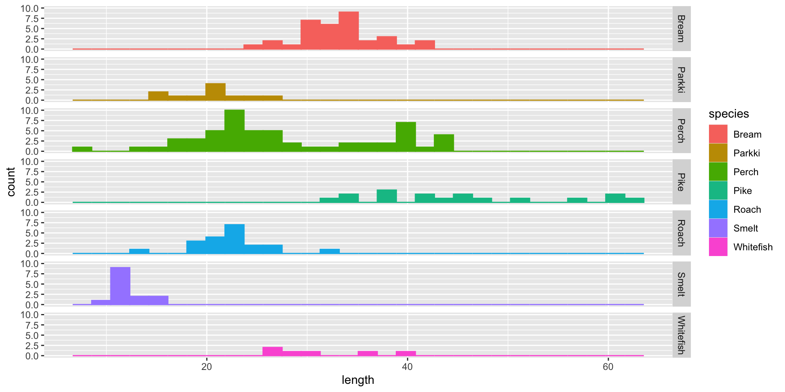
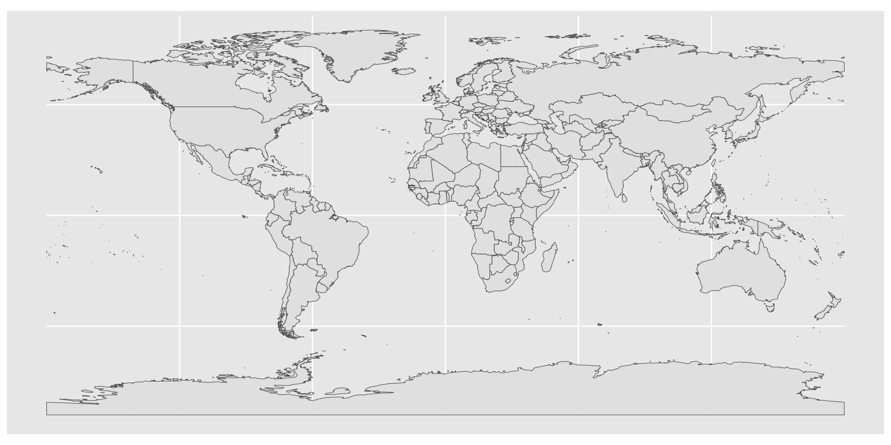
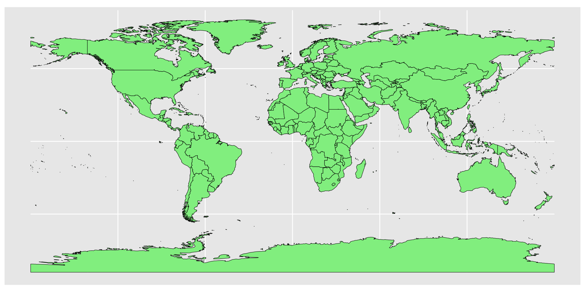

MAR 536 Lab 8: plotting spatial data
2023-03-29
Today: Advanced plotting
- Plot review
- Layouts & multi-panel plots
- Mapping
- Spatial analyses
3 Things required for ggplots:
- Call to ggplot()
- Aesthetics using aes()
- Geometries e.g. geom_point(), geom_bar(), geom_line(), ect.
Multi-panel plot options
ggplot
facet_grid()gridandgridExtrapackagespatchworkpackagepar()latticepackage other examplesggridgescowplot
facet_grid() example: Laengelmavesi data (lab 2)
facet_grid()
facet_grid()
grid and gridExtra examples
The gridExtra package arranges “grobs”
grob = graphical object
gridExtra functions can also arrange gtables and ggplot objects
Some gapminder example plots to work with:
continents with low life expectancy
distribution of life expectancy over years for two countries
grid and gridExtra examples continued…
Passing plots to grid.arrange() and specifying either the number of rows or columns gives a simple layout.
grid and gridExtra examples continued…
Grobs may also be placed in a list and arranged using customized formats using the argument layout_matrix.
Patchwork
The patchwork package provides a shorthand method to plot multiple ggplot objects together
Patchwork example continued…
To structure plot layouts further use the plot_layout() function
Note that the {} indicate a nested plot
Patchwork example continued…
This package also uses | to indicate plots adjacent to one another and / to indicate vertical stacking
For more examples see: https://gotellilab.github.io/GotelliLabMeetingHacks/NickGotelli/ggplotPatchwork.html
Exercise 1
- Use
patchworkorgrid+gridExtrato create a 4-panel plot grid with the following characteristics:
- space for 4 ggplots
- 2 columns & 3 rows
- the first column should be twice as wide as the second column
- the first plot should appear in the entire first column
- plots 2-4 should fill the second column
Mapping
There are n (where n is large) ways to produce maps using R.
Many of these are beyond this course and delve into the dark abstractedly projected rabbithole that is cartography.
However, we can produce very nice looking maps in R quite easily.
(because learning GIS can be hard)
Using {ggplot2} and the {sf} package.
We can also use {sf} to do lots of spatial data operations & analyses, all within R.
Country coastlines
The package {rnaturalearth} provides a map of countries of the entire world.
simple map
map color
chloropleth maps
plotting a data variable with our geometries
Projection and extent
coord_sf() deals with the coordinate system Used to change the map projections, and the extent. e.g.
census data example
library(tidycensus)
#options(tigris_use_cache = TRUE)
age_data <- get_acs(
geography = "tract",
variables = "B19013_001", #"B01002_001",
state = "MA",
geometry = TRUE
)
##
|
| | 0%
|
|== | 3%
|
|==== | 5%
|
|====== | 8%
|
|======= | 11%
|
|========= | 13%
|
|=========== | 16%
|
|============= | 18%
|
|============== | 20%
|
|=============== | 22%
|
|================= | 25%
|
|=================== | 27%
|
|===================== | 30%
|
|======================= | 32%
|
|=========================== | 39%
|
|================================ | 45%
|
|================================== | 48%
|
|===================================== | 53%
|
|======================================= | 56%
|
|========================================== | 59%
|
|=========================================== | 62%
|
|======================================================================| 100%
ggplot(age_data, aes(fill = estimate)) +
geom_sf(color = NA) +
theme_void() +
scale_fill_viridis_c(option = "magma") +
labs(title = "Massachusetts median income",
subtitle = "2017-2021 ACS",
fill = "Estimate")looking at the sf object
age_data
## Simple feature collection with 1620 features and 5 fields (with 7 geometries empty)
## Geometry type: MULTIPOLYGON
## Dimension: XY
## Bounding box: xmin: -73.50814 ymin: 41.23796 xmax: -69.92839 ymax: 42.88659
## Geodetic CRS: NAD83
## First 10 features:
## GEOID NAME variable
## 1 25001011300 Census Tract 113; Barnstable County; Massachusetts B19013_001
## 2 25001012601 Census Tract 126.01; Barnstable County; Massachusetts B19013_001
## 3 25001013500 Census Tract 135; Barnstable County; Massachusetts B19013_001
## 4 25009250100 Census Tract 2501; Essex County; Massachusetts B19013_001
## 5 25009250500 Census Tract 2505; Essex County; Massachusetts B19013_001
## 6 25009250900 Census Tract 2509; Essex County; Massachusetts B19013_001
## 7 25009266200 Census Tract 2662; Essex County; Massachusetts B19013_001
## 8 25009266300 Census Tract 2663; Essex County; Massachusetts B19013_001
## 9 25009260100 Census Tract 2601; Essex County; Massachusetts B19013_001
## 10 25009268100 Census Tract 2681; Essex County; Massachusetts B19013_001
## estimate moe geometry
## 1 108889 12602 MULTIPOLYGON (((-70.24078 4...
## 2 68143 18196 MULTIPOLYGON (((-70.3366 41...
## 3 141453 21889 MULTIPOLYGON (((-70.48384 4...
## 4 32684 9412 MULTIPOLYGON (((-71.16964 4...
## 5 51317 11369 MULTIPOLYGON (((-71.17166 4...
## 6 35119 8040 MULTIPOLYGON (((-71.15623 4...
## 7 90580 20856 MULTIPOLYGON (((-70.97472 4...
## 8 93450 17993 MULTIPOLYGON (((-70.93725 4...
## 9 34050 10705 MULTIPOLYGON (((-71.08812 4...
## 10 211607 39650 MULTIPOLYGON (((-70.94029 4...just for Bristol County
age_data <- get_acs(
geography = "tract",
variables = "B19013_001", #for median age = "B01002_001",
state = "MA",
county = "Bristol",
geometry = TRUE
)
ggplot(age_data, aes(fill = estimate)) +
geom_sf(color = NA) +
theme_void() +
scale_fill_viridis_c(option = "magma") +
labs(title = "Bristol County median income",
subtitle = "2017-2021 ACS",
fill = "Estimate")Exercise 2
Use ggplot to create a map of Cape Cod with the following features:
- Longitudes should range from \(-71^{\circ}\text{W}\) to \(-69^{\circ}\text{W}\)
- Latitudes should range from \(41.25^{\circ}\text{N}\) to \(43^{\circ}\text{N}\)
- Label axes
- Color land
- Add points indicating the locations of Woods Hole, Chatham, and Provincetown
- BONUS Change the map projection
For coastline use: